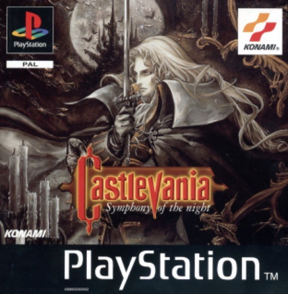

Adventure · 1997
Castlevania: Symphony of the Night
One castle, inverted; the genre gets half its name from here.

Cover: Wikipedia: Castlevania: Symphony of the Night
Facts
- Released
- 1997-03-20
- Genre
- Metroidvania
- Category
- Adventure
- Platforms
- Mobile, PlayStation
- Developers
- Konami
- Publishers
- Konami